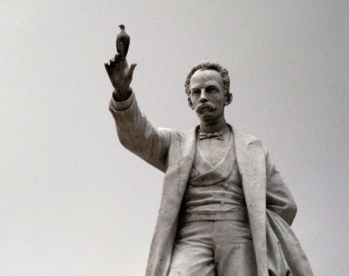

Jose Marti's memorial at Central Park, Havana
Informacion sobre su vida
José Martí, in full José Julián Martí y Pérez, (born January 28, 1853, Havana, Cuba—died May 19, 1895, Dos Ríos), Cuban poet and essayist, patriot and martyr, who became the symbol of Cuba’s struggle for independence from Spain. His dedication to the goal of Cuban freedom made his name a synonym for liberty throughout Latin America. As a patriot, Martí organized and unified the movement for Cuban independence and died on the battlefield fighting for it. As a writer, he was distinguished for his personal prose and deceptively simple, sincere verse on themes of a free and united America.